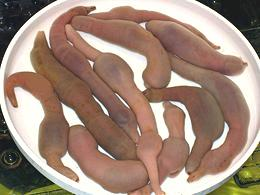

SAFARI
Users
General & History
Annelid worms (phylum Annelida) are very ancient, but having no hard parts, fossil evidence is sparse. They are, however, well represented in the Burgess Shale of 550 million years ago from the mid Cambrian period. They have probably been around since the Precambrium or soon after, but we have to await additional evidence to say for sure.
Eating worms was certainly very important to our early vertebrate ancestors, but declined when they crawled out onto the land, where insects were much more plentiful. In more recent times, as Humans learned to harvest seafood, some worms have returned to the table, particularly in East Asia.
Spoon Worm
 [Sausage Worm, Penis Fish, Fat innkeeper worm; Gaebul (Korea); Yumushi (Japan); Haicháng (China); Urechis unicinctus]
These sea worms dig "U" shaped tunnels in sand or mud. Often other animals take up residence in the tunnels, thus the "innkeeper" name. They were traditionally held as a separate phylum of worms, having no segments, but are now held to be a subgroup of the annelid (segmented) worms. Young larvae are segmented, but lose that characteristic as adults. This is not the species where the tiny male lives its entire adult life within the female's uterus.
In Korea and Japan, these worms are usually eaten raw, with sesame
oil and salt. Not surprisingly, a Korean company has applied for a U.S.
Patent for producing an extract of this worm as a treatment for erectile
disfunction. In China, they are often sliced up and stir fried with
vegetables. They are also dried and ground to be used to add meaty flavor
to dishes. They are particularly popular in Shandong, a north coast
provence of China, just across the Yellow Sea from Korea, and are used
in many recipes there.
Photo by J. Patrick Fischer distributed under license
Creative Commons
Attribution-ShareAlike v3.0 unported.
Peanut Worm
 [Beihai shachong, Tusan (China); Sipunculus nudus]
[Beihai shachong, Tusan (China); Sipunculus nudus]
These burrowing worms are found in sandy subtidal environments and seabeds as deep as 3000 feet. As unsegmented worms, they have traditionally been placed in its own phylum, Sipuncula, but evidence is accumulating that they are a subgroup of the annelid (segmented) worms. This worm can grow to 10 inches long, but is more commonly around 6 inches.
These worms are used as food particularly in the Guangdong, Hainan,
Guangxi, and Fujian provinces of southern China. They are cleaned of
their innards and cooked in various ways. In Fujian province they are
cut into 2 inch segments, embedded in small cakes of clear aspic jelly,
and served with a sauce. Details and
Cooking.
Photo by Vmenkov distributed under license Creative Commons
Attribution-ShareAlike v3.0 unported.